── Attaching core tidyverse packages ──────────────────────── tidyverse 2.0.0 ──
✔ dplyr 1.1.4 ✔ purrr 1.0.2
✔ forcats 1.0.0 ✔ stringr 1.5.1
✔ ggplot2 3.5.1 ✔ tibble 3.2.1
✔ lubridate 1.9.3 ✔ tidyr 1.3.1
── Conflicts ────────────────────────────────────────── tidyverse_conflicts() ──
✖ dplyr::filter() masks stats::filter()
✖ dplyr::lag() masks stats::lag()
ℹ Use the conflicted package (<http://conflicted.r-lib.org/>) to force all conflicts to become errors
Code
data <-read.csv("Datasets/historical_emissions.csv", na.strings =c("NA", "N/A"))
<<<<<<< HEAD
tail(data)
ISO Country Data.source Sector Gas Unit
8209 CHN China Climate Watch Land-Use Change and Forestry CO2 MtCO₂e
8210 DEU Germany Climate Watch Fugitive Emissions CO2 MtCO₂e
8211 ITA Italy Climate Watch Fugitive Emissions CO2 MtCO₂e
8212 MAR Morocco Climate Watch Fugitive Emissions CO2 MtCO₂e
8213 MOZ Mozambique Climate Watch Fugitive Emissions CO2 MtCO₂e
8214 SOM Somalia Climate Watch Industrial Processes CO2 MtCO₂e
X2021 X2020 X2019 X2018 X2017 X2016 X2015 X2014 X2013
8209 -647.85 -647.85 -647.85 -647.91 -647.91 -647.91 -707.98 -707.98 -707.98
8210 NA NA NA NA NA NA NA NA NA
8211 NA 0.00 0.00 0.00 0.00 0.01 0.00 0.00 0.01
8212 NA NA NA NA NA 0.02 NA NA NA
8213 NA 0.00 0.00 0.01 0.02 0.00 0.01 0.02 0.01
8214 NA NA NA NA NA NA NA NA NA
X2012 X2011 X2010 X2009 X2008 X2007 X2006 X2005 X2004
8209 -707.97 -707.97 -330.03 -330.03 -330.04 -330.05 -330.05 -330.05 -330.05
8210 1.70 1.85 1.79 2.06 2.22 2.33 2.39 2.40 2.38
8211 NA NA NA NA NA NA NA NA NA
8212 NA NA NA NA NA NA NA NA NA
8213 NA NA NA NA NA NA NA NA NA
8214 NA NA NA NA NA NA NA NA NA
X2003 X2002 X2001 X2000 X1999 X1998 X1997 X1996 X1995
8209 -330.07 -330.08 -330.07 -347.19 -347.20 -347.22 -347.23 -347.23 -347.24
8210 2.60 2.66 2.70 2.72 2.87 2.77 2.46 2.47 2.50
8211 NA NA NA NA NA NA NA NA NA
8212 NA NA NA NA NA NA NA NA NA
8213 NA NA NA NA NA NA NA NA NA
8214 NA NA NA NA 0.00 0.00 0.00 0.00 0.01
X1994 X1993 X1992 X1991 X1990
8209 -347.28 -347.28 -347.28 -347.28 -347.28
8210 1.45 0.71 0.78 1.16 NA
8211 NA NA NA NA NA
8212 NA NA NA NA NA
8213 NA NA NA NA NA
8214 0.01 0.01 0.01 0.00 0.02
data_long <- cleaned_data |>pivot_longer(cols =starts_with("X"), # Select all columns starting with "X" (years)names_to ="Year", # New column for yearsvalues_to ="Emissions"# New column for emission values ) |>mutate(Year =as.numeric(sub("X", "", Year)))data_long
# A tibble: 255,424 × 8
ISO Country Data.source Sector Gas Unit Year Emissions
<chr> <chr> <chr> <chr> <chr> <chr> <dbl> <dbl>
1 WORLD World Climate Watch Total including LUCF CO2 MtCO₂e 2021 36693.
2 WORLD World Climate Watch Total including LUCF CO2 MtCO₂e 2020 34820.
3 WORLD World Climate Watch Total including LUCF CO2 MtCO₂e 2019 37046.
4 WORLD World Climate Watch Total including LUCF CO2 MtCO₂e 2018 36865.
5 WORLD World Climate Watch Total including LUCF CO2 MtCO₂e 2017 35878.
6 WORLD World Climate Watch Total including LUCF CO2 MtCO₂e 2016 35383.
7 WORLD World Climate Watch Total including LUCF CO2 MtCO₂e 2015 34686.
8 WORLD World Climate Watch Total including LUCF CO2 MtCO₂e 2014 34856.
9 WORLD World Climate Watch Total including LUCF CO2 MtCO₂e 2013 34469.
10 WORLD World Climate Watch Total including LUCF CO2 MtCO₂e 2012 33816.
# ℹ 255,414 more rows
#should we drop data source column?
Code
# Filter for global emissions across all gases for "Total including LUCF"global_emissions_gases <-subset(data_long, Country =="World"& Sector =="Total including LUCF")# Plot emissions for all gases with different line colorsggplot(global_emissions_gases, aes(x = Year, y = Emissions, color = Gas)) +geom_line(size =1) +scale_y_continuous(trans ='log10', labels = scales::comma) +labs(title ="Global Emissions Over Time by Gas",x ="Year",y ="Emissions (MtCO₂e)(on log scale)",color ="Gas") +theme_minimal() +theme(legend.position ="bottom")
=======
dim(data)
[1] 8214 38
Code
#head(data)
We begin our analysis by cleaning the data first. This includes removing all the rows with missing values and dropping Data.source column. Further, we also prepare a long format of the data well before, as this would be used in few graphs coming forward.
1.We first begin by creating a line plot to observe the emission trends of different gases over the years.
Code
global_emissions_gases <-subset(data_long, Country =="World"& Sector =="Total including LUCF")ggplot(global_emissions_gases, aes(x = Year, y = Emissions, color = Gas)) +geom_line(size =1) +geom_point(size =2)+scale_x_continuous(breaks =seq(1990, 2021, by =1)) +labs(title ="Global Emissions Over Time by Gas",x ="Year",y ="Emissions (MtCO₂e)",color ="Gas") +theme(legend.position ="bottom")
>>>>>>> upstream/main
Warning: Using `size` aesthetic for lines was deprecated in ggplot2 3.4.0.
ℹ Please use `linewidth` instead.
<<<<<<< HEAD
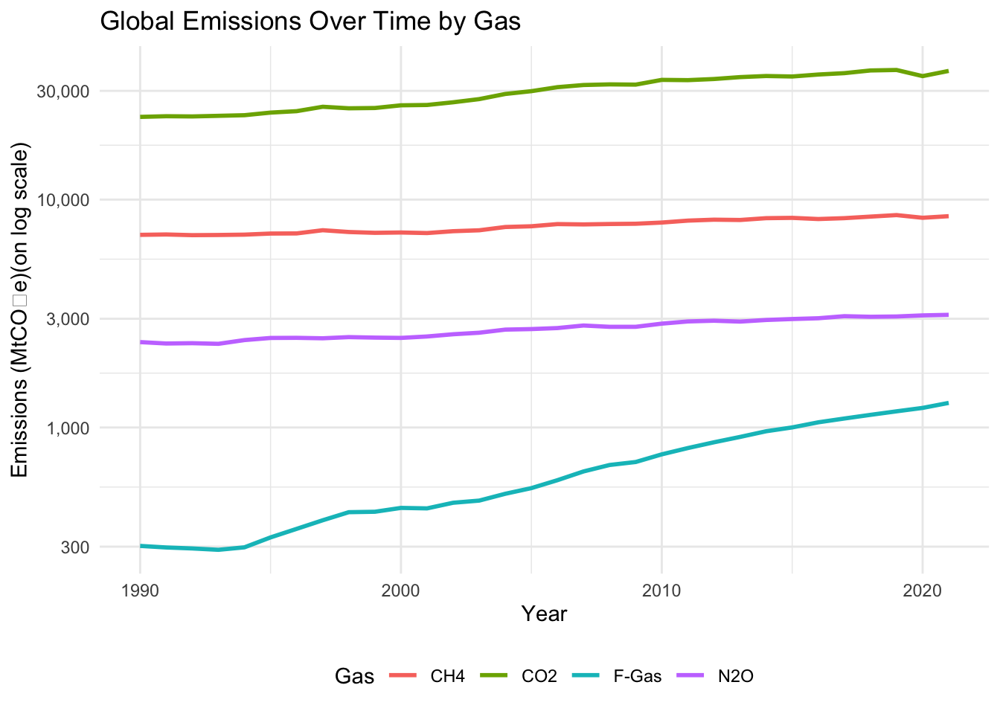
Code
global_emissions_gases <-subset(data_long, Country =="World"& Sector =="Total including LUCF")
Code
# Plot emissions for all gases with different line colorsggplot(global_emissions_gases, aes(x = Year, y = Emissions, color = Gas)) +geom_line(size =1) +labs(title ="Global Emissions Over Time by Gas",x ="Year",y ="Emissions (MtCO₂e)(on log scale)",color ="Gas") +theme_minimal() +theme(legend.position ="bottom")
=======
As we see observe that only CO2 is showing a significant trend, we will apply a log scale to see if there exist any significant trends in the emission of other gases
Code
ggplot(global_emissions_gases, aes(x = Year, y = Emissions, color = Gas)) +geom_line(size =1) +geom_point(size =2)+scale_x_continuous(breaks =seq(1990, 2021, by =1)) +scale_y_continuous(trans ='log10', labels = scales::comma) +labs(title ="Global Emissions Over Time by Gas",x ="Year",y ="Emissions (MtCO₂e)(on log scale)",color ="Gas") +theme(legend.position ="bottom")
>>>>>>> upstream/main
<<<<<<< HEAD
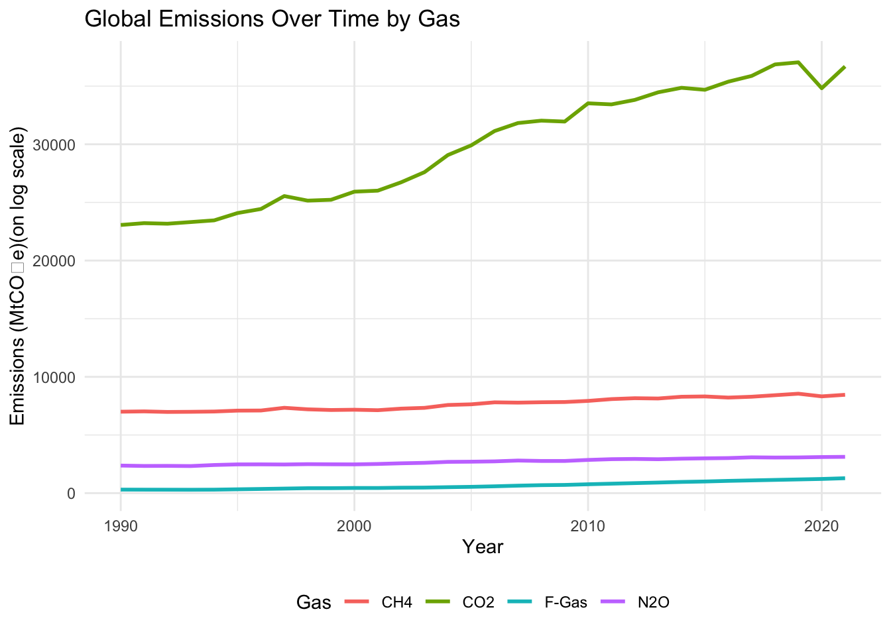
=======
>>>>>>> upstream/main
<<<<<<< HEAD
Code
data_2021 <-subset(data_long, Year ==2021& Gas =="CO2"& Sector =="Total including LUCF")top_10 <- data_2021[order(-data_2021$Emissions), ][2:11, ]ggplot(top_10, aes(x =reorder(Country, Emissions), y = Emissions)) +geom_bar(stat ="identity", fill ="cornflowerblue") +scale_y_continuous(breaks =seq(0, max(top_10$Emissions), by =1000), labels = scales::comma) +labs(title ="Top 10 Emitting Countries in 2021",x ="Country",y ="Emissions (MtCO₂e)") +theme_minimal() +coord_flip()
=======
After applying the log scale, we discover another piece of information. Along with Co2, F-gas emissions have also increased significantly recently compared to the earlier years.
Next, we attempt to get an insight into the countries that are responsible for most amount of emissions. We filter our selection by top 10 countries.
Code
data_2021 <-subset(data_long, Year ==2021& Gas =="CO2"& Sector =="Total including LUCF")top_10 <- data_2021[order(-data_2021$Emissions), ][2:11, ]ggplot(top_10, aes(x =reorder(Country, Emissions), y = Emissions)) +geom_bar(stat ="identity", fill ="darkgreen") +scale_y_continuous(breaks =seq(0, max(top_10$Emissions), by =1000), labels = scales::comma) +labs(title ="Top 10 CO2 Emitting Countries in 2021",x ="Country",y ="Emissions (MtCO₂e)") +coord_flip()
>>>>>>> upstream/main
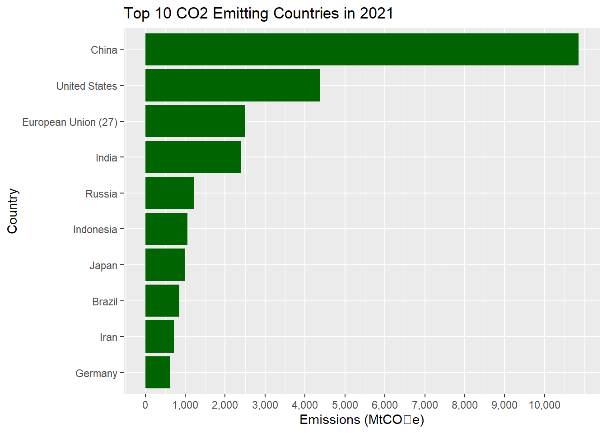
Code
<<<<<<< HEAD
top_countries <- top_10$Countrysector_data <-subset(data_long, Year ==2021& Country %in% top_countries & Gas =="CO2")ggplot(sector_data, aes(x = Country, y = Emissions, fill = Sector)) +geom_bar(stat ="identity") +labs(title ="Sectoral Contributions to Emissions (2021)",x ="Country",y ="Emissions (MtCO₂e)") +theme_minimal() +theme(legend.position ="bottom")
=======
data_2021 <-subset(data_long, Year ==2021& Gas =="CH4"& Sector =="Total including LUCF")top_10 <- data_2021[order(-data_2021$Emissions), ][2:11, ]ggplot(top_10, aes(x =reorder(Country, Emissions), y = Emissions)) +geom_bar(stat ="identity", fill ="pink") +scale_y_continuous(breaks =seq(0, max(top_10$Emissions), by =1000), labels = scales::comma) +labs(title ="Top 10 CH4 Emitting Countries in 2021",x ="Country",y ="Emissions (MtCO₂e)") +coord_flip()
>>>>>>> upstream/main
<<<<<<< HEAD
3.1 Changes made: change Total including LUCF Total excluding LUCF to LUCF and Total excluding LUCF, wondering if that makes sense. Should we apply this to the whole dataset? Also, should we change the color scale, to make each sector more distinct, as some colors stay together has small difference. Besides, there seem to be negative values(below 0), wondering why this is happenning.
Code
# Calculate LUCF emissionssector_data <-subset(data_long, Year ==2021& Country %in% top_countries & Gas =="CO2")# Create a new LUCF column by calculating the differencesector_data_lucf <- sector_data |>filter(Sector %in%c("Total including LUCF", "Total excluding LUCF")) |>spread(Sector, Emissions) |>mutate(LUCF =`Total including LUCF`-`Total excluding LUCF`) |>gather(key ="Sector", value ="Emissions", c("LUCF", "Total excluding LUCF"))# Combine with other sectorssector_data_combined <- sector_data |>filter(!Sector %in%c("Total including LUCF", "Total excluding LUCF")) |>bind_rows(sector_data_lucf)# Plot the updated dataggplot(sector_data_combined, aes(x = Country, y = Emissions, fill = Sector)) +geom_bar(stat ="identity") +labs(title ="Sectoral Contributions to Emissions (2021)",x ="Country",y ="Emissions (MtCO₂e)") +theme_minimal() +theme(legend.position ="bottom") +scale_color_brewer(palette ="PuBu")
=======
Code
data_2021 <-subset(data_long, Year ==2021& Gas =="F-Gas"& Sector =="Total including LUCF")top_10 <- data_2021[order(-data_2021$Emissions), ][2:11, ]ggplot(top_10, aes(x =reorder(Country, Emissions), y = Emissions)) +geom_bar(stat ="identity", fill ="lightblue") +scale_y_continuous(breaks =seq(0, max(top_10$Emissions), by =1000), labels = scales::comma) +labs(title ="Top 10 F-Gas Emitting Countries in 2021",x ="Country",y ="Emissions (MtCO₂e)") +coord_flip()
>>>>>>> upstream/main
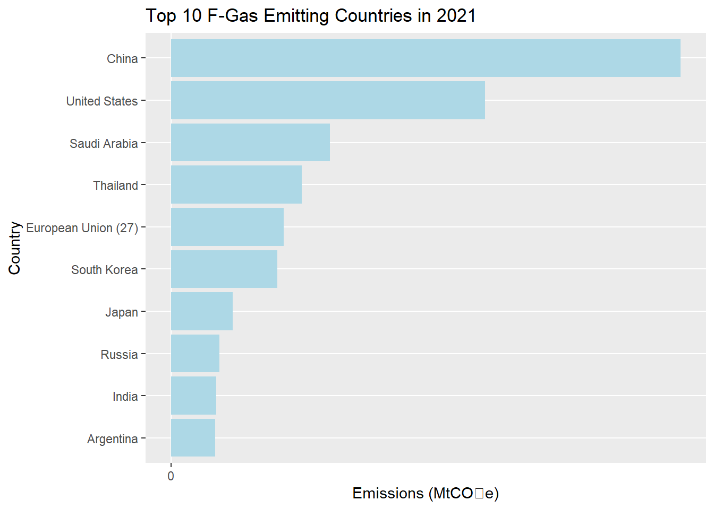
Code
<<<<<<< HEAD
facet_data <-subset(data_long, Country %in%c("China", "United States", "India", "European Union (27)") & Sector =="Total including LUCF")ggplot(facet_data, aes(x = Year, y = Emissions, color = Gas)) +geom_line(size =1) +facet_wrap(~ Country, scales ="free_y") +labs(title ="Regional Emissions Trends by Gas",x ="Year",y ="Emissions (MtCO₂e)") +theme_minimal()
=======
data_2021 <-subset(data_long, Year ==2021& Gas =="N2O"& Sector =="Total including LUCF")top_10 <- data_2021[order(-data_2021$Emissions), ][2:11, ]ggplot(top_10, aes(x =reorder(Country, Emissions), y = Emissions)) +geom_bar(stat ="identity", fill ="purple") +scale_y_continuous(breaks =seq(0, max(top_10$Emissions), by =1000), labels = scales::comma) +labs(title ="Top 10 N2O Emitting Countries in 2021",x ="Country",y ="Emissions (MtCO₂e)") +coord_flip()
>>>>>>> upstream/main
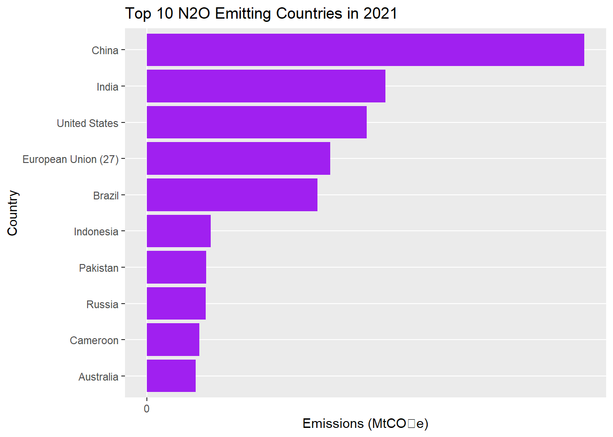
<<<<<<< HEAD
Code
facet_data <-subset( data_long, Country %in%c("China", "United States", "India", "European Union (27)","Russia", "Japan", "Brazil", "Indonesia", "Iran", "Germany"# Top 10 emitters ) & Sector %in%c("Energy", "Agriculture", "Transport","Electricity/Heat", "Waste", "Industrial Processes" ) &# Key sectors Gas %in%c("CO2", "CH4", "N2O", "F-Gas") # Major greenhouse gases)
Code
gas_sector_data <-subset( data_long, Country =="World"& Sector %in%c("Energy", "Agriculture", "Transport", "Electricity/Heat") & Gas %in%c("CO2", "CH4", "N2O", "F-Gas"))ggplot(gas_sector_data, aes(x = Year, y = Emissions, color = Gas)) +geom_line(size =1) +facet_wrap(~ Sector, scales ="free_y") +labs(title ="Gas Contributions by Sector Over Time (1990–2021)",x ="Year",y ="Emissions (MtCO₂e)",color ="Gas" ) +theme_minimal() +theme(strip.text =element_text(size =10, face ="bold"),plot.title =element_text(size =16, face ="bold"),axis.text =element_text(size =8),legend.position ="bottom" )
=======
China and United States dominate the list of top emitters with India and Russia also making significant contributions.
3.Next we deep diver into the sector wise contributions of emissions among the top 10 countries emitting CO2
Code
# Calculate LUCF emissionstop_countries <- top_10$Countrysector_data <-subset(data_long, Year ==2021& Country %in% top_countries & Gas =="CO2")# Create a new LUCF column by calculating the differencesector_data_lucf <- sector_data |>filter(Sector %in%c("Total including LUCF", "Total excluding LUCF")) |>spread(Sector, Emissions) |>mutate(LUCF =`Total including LUCF`-`Total excluding LUCF`) |>gather(key ="Sector", value ="Emissions", c("LUCF", "Total excluding LUCF"))# Combine with other sectorssector_data_combined <- sector_data |>filter(!Sector %in%c("Total including LUCF", "Total excluding LUCF")) |>bind_rows(sector_data_lucf)# Plot the updated dataggplot(sector_data_combined, aes(x = Country, y = Emissions, fill = Sector)) +geom_bar(stat ="identity") +scale_fill_manual(values =c("Building"="#E69F00","Bunker Fuels"="#56B4E9","Electricity/Heat"="#009E73","Energy"="#F0E442","Fugitive Emissions"="#0072B2","Industrial Processes"="#D55E00","Land-Use Change and Forestry"="#CC79A7","Manufacturing/Construction"="#999999","Other Fuel Combustion"="#B2DF8A","Total excluding LUCF"="#33A02C","Total including LUCF"="#FB9A99","Transportation"="#1B9E77" )) +labs(title ="Sectoral Contributions to Emissions (2021)",x ="Country",y ="Emissions (MtCO₂e)") +theme(legend.position ="right")
>>>>>>> upstream/main
<<<<<<< HEAD
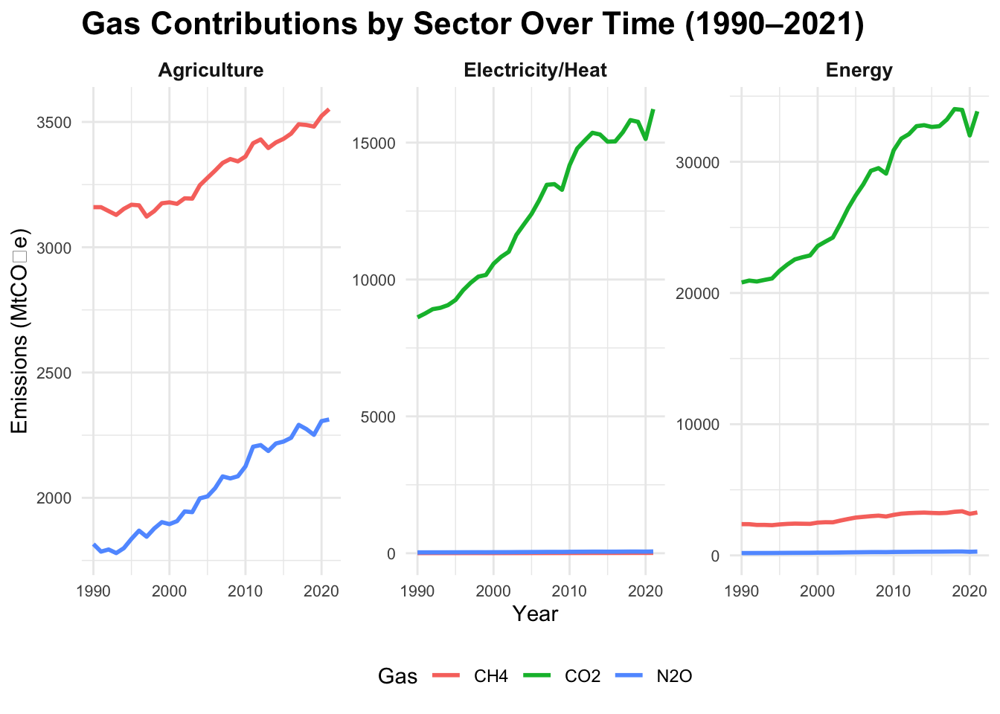
=======
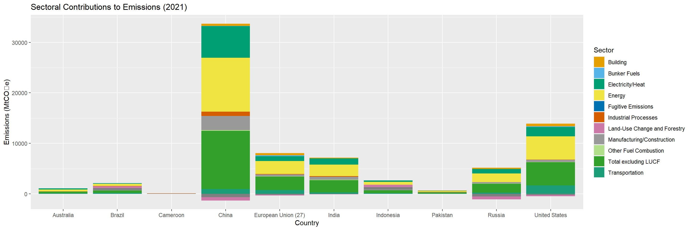
>>>>>>> upstream/main
<<<<<<< HEAD
4 Should we free scale in this part?
Code
# Filter data for selected countries and sectors across gasesgas_focused <-subset( data_long, Country %in%c("China", "United States", "India", "European Union (27)", "Russia") & Sector %in%c("Energy", "Agriculture", "Transport", "Electricity/Heat") & Gas %in%c("CO2", "CH4", "N2O", "F-Gas"))# Faceted grid plotggplot(gas_focused, aes(x = Year, y = Emissions, color = Country)) +geom_line(size =1) +facet_grid(Sector ~ Gas, scales ="free_y") +labs(title ="Sectoral Emissions by Gas and Country (1990–2021)",x ="Year",y ="Emissions (MtCO₂e)",color ="Country" ) +theme_minimal() +theme(strip.text =element_text(size =10, face ="bold"),plot.title =element_text(size =16, face ="bold"),legend.position ="bottom" )
=======
We can infer that for most of the countries in 2021, sectors including Energy and Electricity and heat are the top sectors that emit Co2. Another, important observation to note is the bars below 0, that is Land Use Change and Forestry denotes that this sector acts as sink of Co2 rather than source and thus, the negative value.
Next we examine the trends of emissions by specific regions.
Code
facet_data <-subset(data_long, Country %in%c("China", "United States", "India", "European Union (27)","Russia") & Sector =="Total including LUCF")ggplot(facet_data, aes(x = Year, y = Emissions, color = Gas)) +geom_line(size =1) +facet_wrap(~ Country, scales ="free_y") +labs(title ="Regional Emissions Trends by Gas",x ="Year",y ="Emissions (MtCO₂e)") +theme_minimal()
>>>>>>> upstream/main
<<<<<<< HEAD
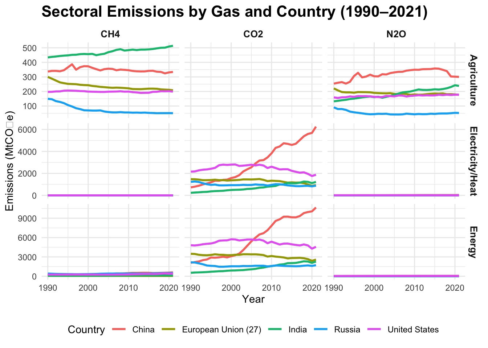
=======
>>>>>>> upstream/main
<<<<<<< HEAD
Code
sector_country_data <-subset( data_long, Year ==2021& Country %in%c("China", "United States", "India", "European Union (27)","Russia", "Japan", "Brazil", "Germany" ) & Gas =="CO2"&!Sector %in%c("Total including LUCF", "Total excluding LUCF") # Exclude these sectors)ggplot(sector_country_data, aes(x = Country, y = Sector, fill = Emissions)) +geom_tile() +scale_fill_gradient(low ="lightblue", high ="darkblue") +labs(title ="Sectoral Emissions Intensity Across Countries (2021)",x ="Country",y ="Sector",fill ="Emissions (MtCO₂e)" ) +theme_minimal() +theme(plot.title =element_text(size =16, face ="bold"),axis.text.x =element_text(angle =45, hjust =1),legend.position ="right" )
=======
We observe that China , United States and India are the largest emitters of Co2 in recent years. Historically, United States , China and European Union have been the highest emitters of CO2. Moreover, EU and United States have shown some decline in emissions which is a good indication. F-Gas and N2O are relatively small for all the regions.
For this plot we analyze the trend in the emissions of the gases in the main sectors over the years.
Code
gas_sector_data <-subset( data_long, Country =="World"& Sector %in%c("Energy", "Agriculture", "Electricity/Heat") & Gas %in%c("CO2", "CH4", "N2O", "F-Gas"))ggplot(gas_sector_data, aes(x = Year, y = Emissions, color = Gas)) +geom_line(size =1) +facet_wrap(~ Sector, scales ="free_y") +labs(title ="Gas Contributions by Sector Over Time (1990–2021)",x ="Year",y ="Emissions (MtCO₂e)",color ="Gas" ) +theme_minimal() +theme(strip.text =element_text(size =12, face ="bold"),plot.title =element_text(size =15, face ="bold"),axis.text =element_text(size =9),legend.position ="right" )
>>>>>>> upstream/main
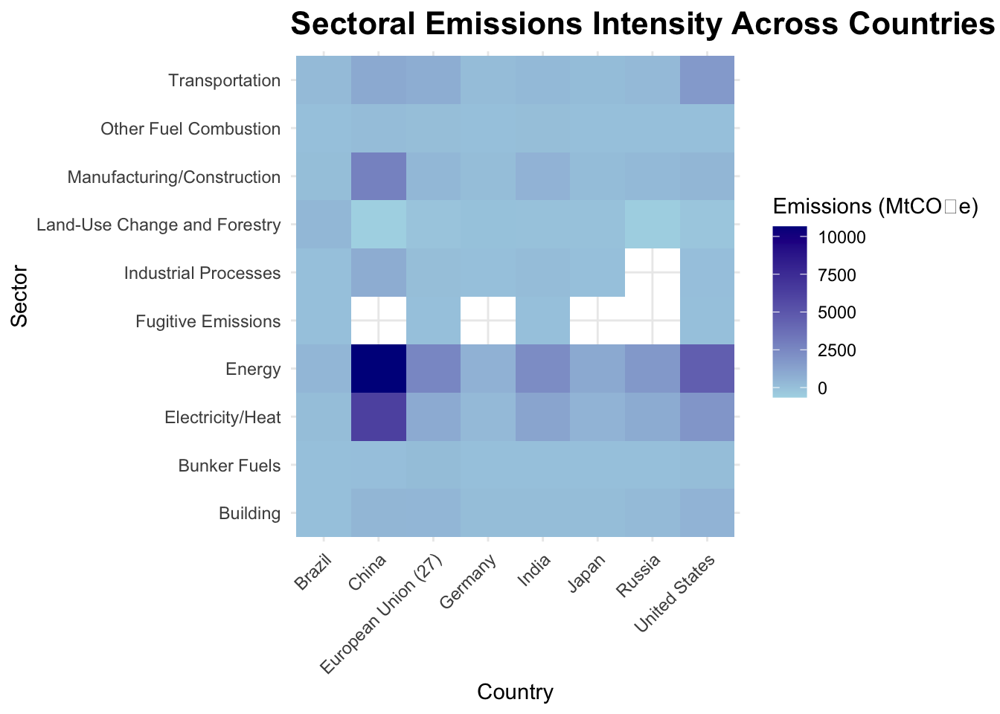
<<<<<<< HEAD
Code
# Filter data for sector-by-gas analysissector_gas_data <-subset( data_long, Year ==2021&!Sector %in%c("Total including LUCF", "Total excluding LUCF") & Gas %in%c("CO2", "CH4", "N2O", "F-Gas"))
Code
# Summarize data to get total emissions by sector and gassector_gas_summary <- sector_gas_data |>group_by(Sector, Gas) |>summarise(Total_Emissions =sum(Emissions, na.rm =TRUE)) |>ungroup()
`summarise()` has grouped output by 'Sector'. You can override using the
`.groups` argument.
Code
# Create stacked bar chartggplot(sector_gas_summary, aes(x =reorder(Sector, -Total_Emissions), y = Total_Emissions, fill = Gas)) +geom_bar(stat ="identity") +labs(title ="Sectoral Emissions by Gas (2021)",x ="Sector",y ="Total Emissions (MtCO₂e)",fill ="Gas" ) +theme_minimal() +theme(plot.title =element_text(size =16, face ="bold"),axis.text.x =element_text(angle =45, hjust =1),legend.position ="bottom" )
=======
An interesting information that we get from this plot is that the agriculture sector is mainly responsible for emitting CH4 and and N2O. Whereas, the major contributors of CO2 have been Electricity/Heat and Energy Sectors. Moreover, over the years, the emissions of these gases have increased. Understanding these trends in these sectors can help policy makers develop effective measures to control emissions and adopt sustainable practices.
In this plot we analyze the trends of emission of different gases in different countries in different sectors.
Code
gas_focused <-subset( data_long, Country %in%c("China", "United States", "India", "European Union (27)", "Russia") & Sector %in%c("Energy", "Agriculture", "Transport", "Electricity/Heat") & Gas %in%c("CO2", "CH4", "N2O"))ggplot(gas_focused, aes(x = Year, y = Emissions, color = Country)) +geom_line(size =1) +facet_grid(Sector ~ Gas, scales ="free_y") +labs(title ="Sectoral Emissions by Gas and Country (1990–2021)",x ="Year",y ="Emissions (MtCO₂e)",color ="Country" ) +theme_minimal() +theme(strip.text =element_text(size =10, face ="bold"),plot.title =element_text(size =16, face ="bold"),legend.position ="bottom" )
>>>>>>> upstream/main
<<<<<<< HEAD
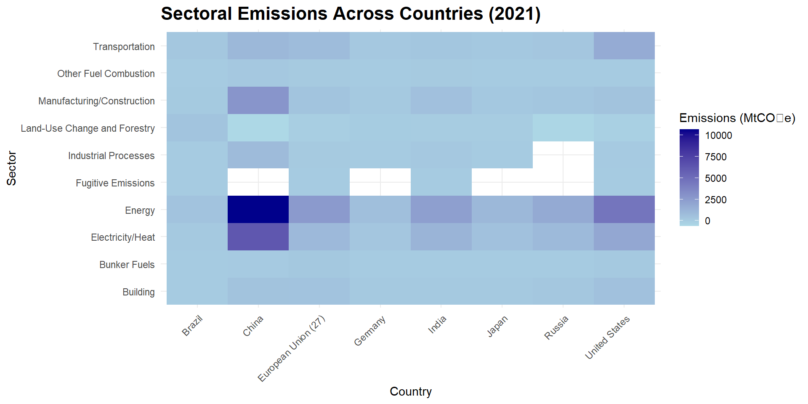
=======
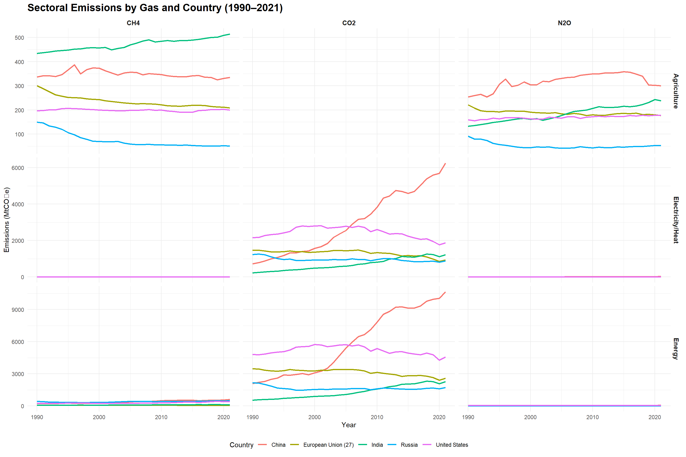
>>>>>>> upstream/main
<<<<<<< HEAD
Code
library(ggplot2)# Filter data for relevant countries, sectors, and gasesgrouped_bar_data <-subset( data_long, Year ==2021& Country %in%c("China", "United States", "India", "European Union (27)", "Russia") &!Sector %in%c("Total including LUCF", "Total excluding LUCF") & Gas %in%c("CO2", "CH4", "N2O","F-Gas"))# Create grouped bar chartggplot(grouped_bar_data, aes(x = Sector, y = Emissions, fill = Gas)) +geom_bar(stat ="identity", position ="dodge") +facet_wrap(~ Country, scales ="free_y") +labs(title ="Sectoral Emissions by Gas Faceted by Country (2021)",x ="Sector",y ="Emissions (MtCO₂e)",fill ="Gas" ) +theme_minimal() +theme(plot.title =element_text(size =16, face ="bold"),axis.text.x =element_text(angle =45, hjust =1),legend.position ="bottom" )
=======
China and United States are the primary emitters of CO2 mainly in the Energy and Electricity/ Heat Sectors. Further, The European Union suggests a stable trend in the emission of CO2, with sector agriculture showing a downward trend in the emission of CH4 and N2O. Russia also displays a similar trend India leads the emission of CH4 particularly in the agriculture sector. This can be attributed to the large number of agricultural activities carried out in India. United States also displays a stable trend in agriculture sector and slight downward trend in the Electricity and Energy sector.
Sectoral Emissions across countries in 2021 or CO2
Code
sector_country_data <-subset( data_long, Year ==2021& Country %in%c("China", "United States", "India", "European Union (27)","Russia", "Japan", "Brazil", "Germany" ) & Gas =="CO2"&!Sector %in%c("Total including LUCF", "Total excluding LUCF") # Exclude these sectors)ggplot(sector_country_data, aes(x = Country, y = Sector, fill = Emissions)) +geom_tile() +scale_fill_gradient(low ="lightblue", high ="darkblue") +labs(title ="Sectoral Emissions Across Countries (2021)",x ="Country",y ="Sector",fill ="Emissions (MtCO₂e)" ) +theme_minimal() +theme(plot.title =element_text(size =16, face ="bold"),axis.text.x =element_text(angle =45, hjust =1),legend.position ="right" )
>>>>>>> upstream/main
<<<<<<< HEAD
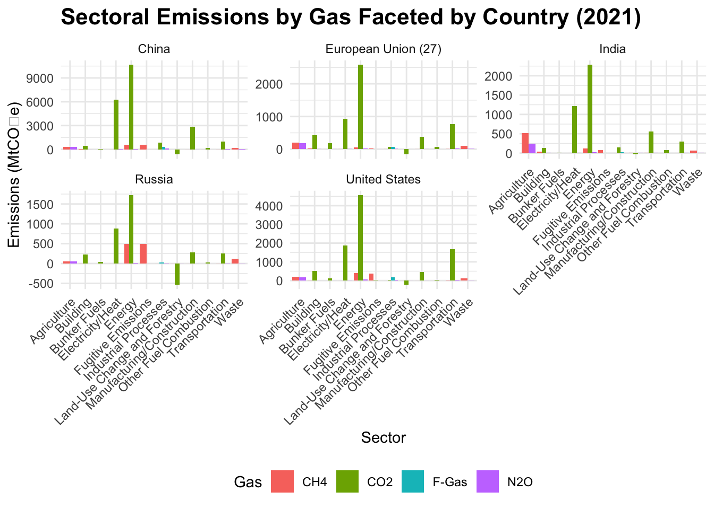
=======
>>>>>>> upstream/main
<<<<<<< HEAD
Code
library(ggplot2)# Filter data for relevant countries, sectors, and gasesgrouped_bar_data <-subset( data_long, Year ==2021& Country %in%c("China", "United States", "India", "European Union (27)", "Russia") &!Sector %in%c("Total including LUCF", "Total excluding LUCF") & Gas %in%c("CO2", "CH4", "N2O"))# Create grouped bar chartggplot(grouped_bar_data, aes(x = Sector, y = Emissions, fill = Gas)) +geom_bar(stat ="identity", position ="dodge") +scale_y_continuous(trans ="log10", labels = scales::comma) +facet_wrap(~ Country, scales ="free_y") +labs(title ="Sectoral Emissions by Gas Faceted by Country (2021)",x ="Sector",y ="Emissions (MtCO₂e)",fill ="Gas" ) +theme_minimal() +theme(plot.title =element_text(size =16, face ="bold"),axis.text.x =element_text(angle =45, hjust =1),legend.position ="bottom" )
Warning in transformation$transform(x): NaNs produced
Warning: Removed 5 rows containing missing values or values outside the scale range
(`geom_bar()`).
=======
This plot informs us about the emissions of each country with respect to a particular sector. This also tells us how active that country would be in that sector. As we observed from the previous graphs, Energy and Electricity/Heat are the top emitters. Couple of countries have high amount of emission in the transportation and manufacturing/construction.
Here we analyze the sectoral emissions by gas which a plot between two categorical varibles and thus we use a stacked bar chart.
Code
# Filter sector_gas_data <-subset( data_long, Year ==2021&!Sector %in%c("Total including LUCF", "Total excluding LUCF") & Gas %in%c("CO2", "CH4", "N2O", "F-Gas"))
`summarise()` has grouped output by 'Sector'. You can override using the
`.groups` argument.
Code
ggplot(sector_gas_summary, aes(x =reorder(Sector, -Total_Emissions), y = Total_Emissions, fill = Gas)) +geom_bar(stat ="identity") +labs(title ="Sectoral Emissions by Gas (2021)",x ="Sector",y ="Total Emissions (MtCO₂e)",fill ="Gas" ) +theme_minimal() +theme(plot.title =element_text(size =16, face ="bold"),axis.text.x =element_text(angle =45, hjust =1),legend.position ="right" )
>>>>>>> upstream/main
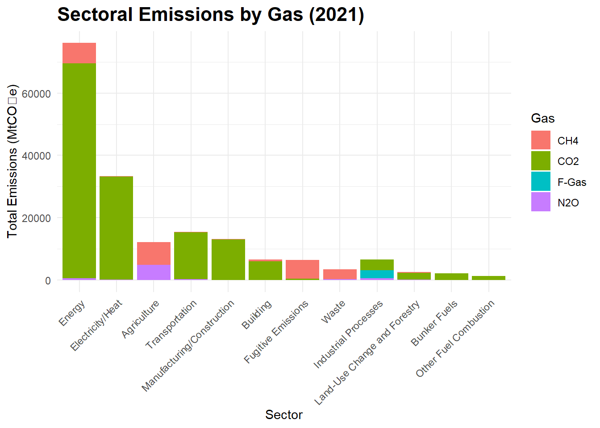
<<<<<<< HEAD
5 Additional Graph
Code
library(dplyr)library(ggplot2)# Filter CO2 emissions dataco2_data <- data_long |>filter(Gas =="CO2", Sector =="Total including LUCF")# Calculate global total emissions for each yearglobal_emissions <- co2_data |>group_by(Year) |>summarise(Total_Emissions =sum(Emissions, na.rm =TRUE))# Calculate cumulative emissions per country and identify top 5 emitterstop_5_countries <- co2_data |>group_by(Country) |>summarise(Cumulative_Emissions =sum(Emissions, na.rm =TRUE)) |>arrange(desc(Cumulative_Emissions)) |>slice(2:6) |>pull(Country)# Filter for top 5 countries and calculate percentage contributiontop_5_contributions <- co2_data |>filter(Country %in% top_5_countries) |>left_join(global_emissions, by ="Year") |>mutate(Percentage_Contribution = Emissions / Total_Emissions *100)# Plot the line chartggplot(top_5_contributions, aes(x = Year, y = Percentage_Contribution, color = Country)) +geom_line(size =1) +labs(title ="Contribution of Top 5 Countries to CO2 Emissions (1990–2021)",x ="Year",y ="Percentage Contribution",color ="Country" ) +theme_minimal() +theme(plot.title =element_text(size =14, face ="bold"),axis.text =element_text(size =10),legend.position ="right" )
=======
Here we observe that Energy, Electricity/Heat, Transportation, Manufacturing/Construction are the major contributors of CO2 emissions. Sectors like Agriculture, Fugitive emissions and waste contribute to the emissions of CH4. Further Agriculture and Industrial sectors are responsible for the emissions of N2O gas. And Industrial processes are the major contributors of F-Gas.
In this plot we finally analyze the percentage contribution of the top 5 CO2 emitting countries over the years.
Code
library(dplyr)library(ggplot2)# Filter CO2 emissions dataco2_data <- data_long |>filter(Gas =="CO2", Sector =="Total including LUCF")# Calculate global total emissions for each yearglobal_emissions <- co2_data |>group_by(Year) |>summarise(Total_Emissions =sum(Emissions, na.rm =TRUE))# Calculate cumulative emissions per country and identify top 5 emitterstop_5_countries <- co2_data |>group_by(Country) |>summarise(Cumulative_Emissions =sum(Emissions, na.rm =TRUE)) |>arrange(desc(Cumulative_Emissions)) |>slice(2:6) |>pull(Country)# Filter for top 5 countries and calculate percentage contributiontop_5_contributions <- co2_data |>filter(Country %in% top_5_countries) |>left_join(global_emissions, by ="Year") |>mutate(Percentage_Contribution = Emissions / Total_Emissions *100)# Plot the line chartggplot(top_5_contributions, aes(x = Year, y = Percentage_Contribution, color = Country)) +geom_line(size =1) +labs(title ="Contribution of Top 5 Countries to CO2 Emissions (1990–2021)",x ="Year",y ="Percentage Contribution",color ="Country" ) +theme_minimal() +theme(plot.title =element_text(size =14, face ="bold"),axis.text =element_text(size =10),legend.position ="right" )
>>>>>>> upstream/main
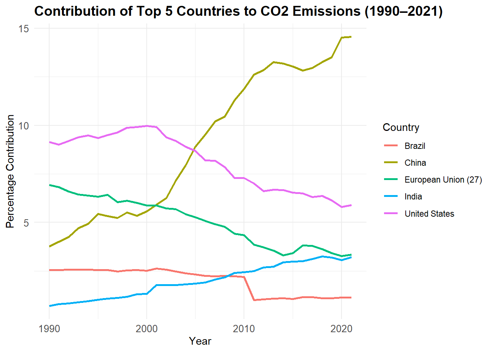
<<<<<<< HEAD
=======
We observe that the percentage contribution of China has increased significantly over the years. The same trend is observed for India but the rise is gradual and is not as steep as China. Whereas, for the countries in European Union, United States and Brazil, the contribution of CO2 has fallen over the years.